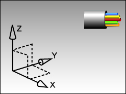

Create a metric routing part
-
On the Standard toolbar, click New
 .
.
-
On the Model tab, make sure:
Units
= Millimeters
Templates
= Routing Electrical
When you use this template, NX automatically opens the new part for you in the Routing Electrical application.

-
For Native NX, in the New File Name group, accept the default part name route_elec_model1.prt.
(You do not need to save this part.)
Note
In a Teamcenter Integration environment, accept the default part name and revision by clicking Assign in the Number row.
-
点击确定。